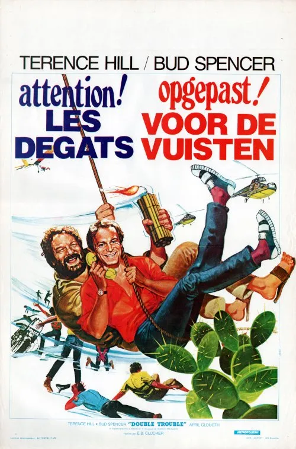

1984 · 13 tracce
Musiche di Franco Micalizzi.
Elenco dell’edizione indicata; comprende versioni discografiche e alternative. Non costituisce un elenco certificato di ogni inserto musicale nel montaggio del film.
Gli elenchi documentano le edizioni pubblicate; la presenza di ciascuna traccia nel montaggio del film non è certificata.
Brani e ascolti
- 01
What's goin' on (in Brazil)
3:07 - 02
The Mysterious Man
2:32Franco Micalizzi - Topic
- 03
Flying Carousel
2:33 - 04
Double Trouble Theme (Bossanova Version)
3:15Franco Micalizzi - Topic
- 05
A Guy with it's pretty Girls
3:06Franco Micalizzi - Topic
- 06
Double Trouble Theme (Jazz Band Version)
2:11Franco Micalizzi - Topic
- 07
Hear it tonight
2:36Franco Micalizzi - Topic
- 08
Double Trouble Theme (Samba Version)
1:53Franco Micalizzi - Topic
- 09
Mississippi Dream
2:38Franco Micalizzi · Identificato nei risultati pubblici; apertura non verificata per un limite temporaneo di YouTube.
- 10
Quica Theme
1:22Video non identificato · collegamento a una ricerca
- 11
The Mysterious Man
3:05The Micalizzi Family - Topic
- 12
Flute Rhythm
0:28Franco Micalizzi - Topic
- 13
Double Trouble Theme
3:02Franco Micalizzi - Topic
Fonti e riferimenti
- Scheda del film e creditiConsultata il 3 ottobre 2026.
- Edizione e lista delle tracceConsultata il 3 ottobre 2026.
- Beat Records — colonna sonora ampliataConsultata il 3 ottobre 2026.
- Locandina — Non c’è due senza quattroConsultata il 3 ottobre 2026.